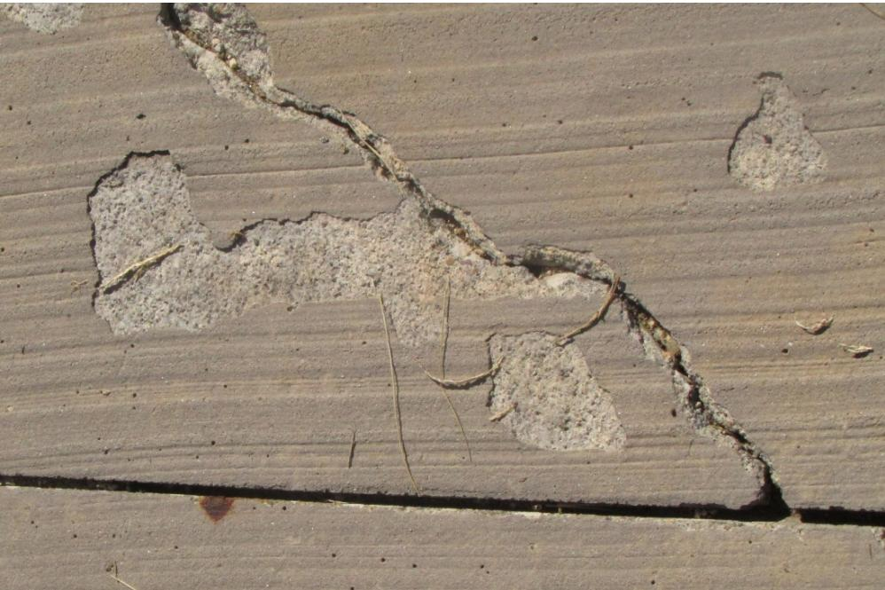
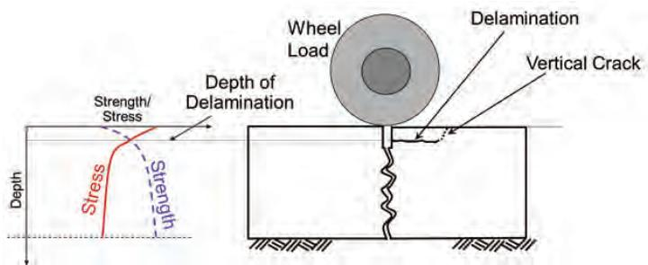
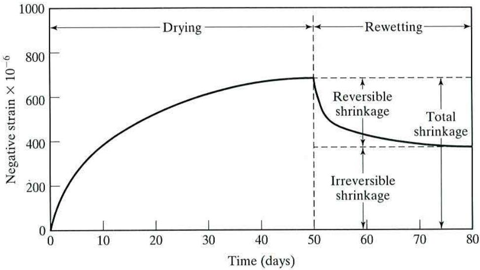

Concrete Shrinkage Mechanisms
Concrete shrinkage mechanisms are the chemical and physical processes that cause cement‑treated concrete to lose volume during curing, encompassing autogenous shrinkage from hydration reactions, plastic shrinkage due to surface moisture loss before set, drying shrinkage as water evaporates after hardening, plus minor settlement and thermal contraction [2][3][5]. The magnitude of these movements is governed primarily by the amount of cement paste (water‑to‑cement ratio and total paste volume), aggregate characteristics such as coefficient of thermal expansion and absorptivity, and environmental conditions that create moisture or temperature gradients; when the resulting tensile stresses exceed concrete’s low tensile strength—often because restraint from reinforcement, subgrade friction, or joint spacing is present—cracking, curling, warping, or debonding occurs, degrading durability [6][7][8][9][10][11][12][13].
Sources (13)
Material purpose and applicability
Concrete shrinkage mechanisms are the chemical and physical processes that cause concrete to lose volume—autogenous shrinkage from hydration reactions, plastic shrinkage due to surface moisture loss before setting, drying shrinkage as water evaporates after set, plus minor settlement and thermal contraction. They arise because cement‑treated materials will naturally shrink during the curing process due to desiccation and cement hydration. The amount of drying shrinkage is governed by the total cement paste present; in recycled‑aggregate concrete this paste content controls the dimensional movements, and mixes with RCA can exhibit substantially higher wetting and drying strains. In a pavement slab these volume reductions create internal tensile stresses whenever the slab’s movement is restrained—by reinforcement, subgrade friction, or joints. When the stress exceeds the concrete’s tensile strength, cracking, curling, warping, or debonding develops, degrading flatness, ride quality, structural integrity and service life. Therefore, the function of identifying and managing shrinkage mechanisms is to provide appropriately spaced joints, control paste volume, and apply proper curing so that stresses remain below critical levels and the pavement maintains dimensional stability and durability. [2][3][5][6][7][8][9][10][11][12][13]
The following figure illustrates plastic shrinkage cracking and scaling as visual examples of these degradation mechanisms.

Plastic shrinkage cracking on a concrete surface. [8]The image displays a close-up view of a concrete slab featuring irregular, interconnected cracks and areas where the surface texture appears rough or scaled.
[2] — Ch. 3 (pp. 57–140), Ch. 6 (pp. 168–182), Ch. 7 (p. 218), Ch. 8 (pp. 253–257), Ch. 10 (pp. 318–329); [3] — Ch. 6 (pp. 83–84); [5] — Ch. 6 (pp. 62–63); [6] — Ch. 6 (pp. 80–82); [7] — Susceptibility to Slab Warping… (pp. 11–14); [8] — Ch. 3 (p. 69), Ch. 4 (pp. 104–284); [9] — Ch. 6 (p. 58); [10] — 2. Factors Influencing Long-Li… (p. 26); [11] — 2 Types and Mechanisms of Join… (pp. 15–16); [12] — Shrinkage (p. 14); [13] — Ch. 3 (p. 24), Ch. 7 (p. 114)
Composition and characteristics
“Concrete shrinkage mechanisms are governed by the material’s constituents, its mix composition, and the resulting internal structure that develops as the concrete hardens. The primary constituents are the cement paste and the aggregates.\nThe proportion of paste to aggregate—often expressed as a paste‑content percentage—controls the amount of free water available for evaporation; a lower paste fraction reduces both plastic and drying shrinkage, while high‑paste mixes increase moisture loss and tensile stresses.\n”The volume of the paste shall not exceed 25 percent” and “Paste content should be less than 25 percent by volume of concrete” are reiterated limits that keep the hydrated cement paste (HCP) within a range that moderates shrinkage.\nThe water‑to‑cement (w/c) ratio, the type and quantity of cementitious binders (Portland cement, fly ash, slag, calcined clay, silica fume), and any admixtures that modify workability or early‑age stiffness together define the paste composition. “The most important factor affecting drying shrinkage is the amount of water added per unit volume of concrete,” linking total water content directly to shrinkage magnitude. Finer cement can increase shrinkage, while most supplementary cementitious materials have little direct impact; an exception is interground limestone, which can lower moisture‑related shrinkage.\nAggregate characteristics—mineralogy, size distribution, absorptivity, and coefficient of thermal expansion (CTE)—play an equally critical role. “Low‑CTE aggregates such as quartz, granite, feldspar, limestone, or dolomite limit tensile stresses under restrained conditions.” Coarse aggregate dominates the thermal response; low‑CTE aggregates reduce curling and thermal contraction, whereas high CTE values raise the risk of curvature. Aggregates with lower elastic moduli provide less internal restraint, leading to higher wetting and drying strain: “Aggregates with lower elastic moduli experience higher wetting and drying strain due to significantly less restraint when the new and old paste wets and dries.”\nWhen recycled concrete aggregate (RCA) is used, the total cement paste includes both newly added paste and adhered mortar on the RCA. Because drying shrinkage is driven by moisture loss from this combined paste, mixes with a higher proportion of source paste—such as those containing fine RCA that carries more old mortar—experience greater moisture‑related volume changes.\nIn hardened concrete the HCP forms a network of pores ranging from large entrapped air voids to capillary and nanometer‑scale gel pores (approximately 0.01–5 µm). As these pores empty during drying, menisci develop at the pore walls and generate surface‑tension forces that pull the matrix inward, producing volumetric contraction.\nThe total shrinkage in concrete is comprised of five additive factors: autogenous shrinkage—the volume change of cement paste ingredients as they hydrate; plastic shrinkage—loss of moisture before the concrete sets; drying shrinkage—loss of moisture after the concrete has set; thermal shrinkage linked to the coarse aggregate’s CTE; and settlement caused by aggregate sinking that forces bleeding water to evaporate.\nEnvironmental conditions strongly influence these mechanisms. High setting temperatures followed by night‑time cooling, rapid evaporation, or insufficient early curing promote both plastic and drying shrinkage. “Providing adequate curing early on will reduce the effects of drying shrinkage,” and maintaining moisture for about seven days (or using moist curing when no bituminous curing is applied) helps retain internal water, raise early strength, and delay stress development.\nFor cement‑treated bases, shrinkage is driven by two inherent mechanisms: desiccation and the volumetric reduction that occurs as cement hydrates; controlled microcracking with a vibratory roller can relieve restraint without compromising later strength.\nIn concrete overlays, the high surface‑to‑volume ratio and strong bond or friction at the slab‑support interface amplify shrinkage effects, leading to debonding, differential curling, and early cracking if paste volume exceeds roughly 25 %.\nEarly‑age moisture gradients created by rapid surface evaporation generate tensile stresses that can produce fine horizontal cracks and delamination within the concrete matrix. When such cracks intersect existing joints, material separation from the substrate may occur, resulting in flat‑bottom or spalling failures. [2][3][5][6][7][8][9][10][11][12][13]
[2] — Ch. 3 (pp. 57–140), Ch. 6 (pp. 168–181), Ch. 7 (p. 218), Ch. 8 (pp. 253–257), Ch. 10 (pp. 321–329); [3] — Ch. 6 (pp. 83–84); [5] — Ch. 6 (pp. 62–63); [6] — Ch. 6 (pp. 80–82); [7] — Susceptibility to Slab Warping… (pp. 11–14); [8] — Ch. 3 (pp. 69–72), Ch. 4 (pp. 104–284), Ch. 13 (p. 47); [9] — Ch. 6 (p. 58); [10] — 2. Factors Influencing Long-Li… (p. 26); [11] — 2 Types and Mechanisms of Join… (pp. 15–16); [12] — Shrinkage (p. 14); [13] — Ch. 3 (p. 24), Ch. 7 (p. 114)
Across the guidance documents, variations in mix composition, source materials, and proportioning are consistently linked to changes in both plastic and drying shrinkage. “The most important controllable factor affecting drying shrinkage is the amount of water per unit volume of concrete.” The dominant control is the volume of cement paste: increasing water or cementitious material raises the amount of paste and therefore amplifies tensile stresses that drive shrinkage, while reducing paste—by limiting cement content, using a coarse‑rich aggregate gradation, or substituting low‑paste aggregates—keeps shrinkage within acceptable limits. “Paste content should be less than 25 percent by volume of concrete (AASHTO PP 84).” Designers are urged to keep paste below one quarter of the total mix; doing so also provides internal restraint against moisture‑induced deformation. Water‑to‑cement ratios in the range of 0.40–0.42 are recommended for paving‑grade concrete, because lower ratios can trigger autogenous shrinkage while higher ratios enlarge capillary pores and increase drying strain.
Aggregate selection further modulates shrinkage. Coarse, well‑graded aggregates with low coefficient of thermal expansion supply a stable skeleton that restrains volume change, whereas highly absorptive or gap‑graded fine aggregates draw water from the paste, raise local w/c values, and accelerate surface drying. “Drying shrinkage of RCA concrete, like conventional concrete, is governed by the amount and properties of the total (source and new) cement paste.” Higher proportions of fine recycled concrete aggregate increase the total paste fraction and consequently elevate moisture‑related movements.
Supplementary cementitious materials (SCMs) such as fly ash, slag, calcined clay or silica fume, when used in modest dosages, have little direct impact on shrinkage, although specific additions like interground limestone can slightly reduce moisture‑related strain. Internal curing techniques—pre‑wetting aggregates or incorporating a small amount of pre‑wetted lightweight fine aggregate—and external measures such as evaporation retarders and prompt application of curing compound moderate early‑age moisture gradients and further limit both plastic and drying shrinkage.
In summary, the guides agree that controlling total paste volume (water plus cementitious binder), maintaining appropriate w/c ratios, selecting low‑CTE, coarse aggregates, limiting fine RCA content, and applying effective curing strategies are the primary levers for managing concrete shrinkage mechanisms. [2][5][6][7][8][9][10][12][13]
The figure below illustrates how reducing cementitious content correlates with increasing coarse aggregate size.
 Reduction of cementitious content with increasing coarse aggregate size (based on ACI 211) [6]
Reduction of cementitious content with increasing coarse aggregate size (based on ACI 211) [6]
The figure displays a bar chart showing that the required cementitious content decreases as the nominal maximum size of the coarse aggregate increases.
[2] — Ch. 3 (pp. 57–140), Ch. 6 (pp. 168–181), Ch. 7 (p. 218), Ch. 8 (pp. 253–257); [5] — Ch. 6 (pp. 62–63); [6] — Ch. 6 (pp. 80–82); [7] — Susceptibility to Slab Warping… (pp. 11–14); [8] — Ch. 3 (p. 72), Ch. 4 (pp. 104–284), Ch. 13 (p. 47); [9] — Ch. 6 (p. 58); [10] — 2. Factors Influencing Long-Li… (p. 26); [12] — Shrinkage (p. 14); [13] — Ch. 3 (p. 24), Ch. 7 (p. 114)
Key material properties
The performance of concrete shrinkage mechanisms is dictated by a suite of inter‑related physical, mechanical, chemical and thermal properties. Physically, the amount of water present in the mix is the primary driver; higher water or paste content provides more free moisture that can be lost as plastic or drying shrinkage. The key physical property governing shrinkage is the moisture content gradient created by high evaporation rates during placement, which produces differential drying through the slab thickness. The total amount of shrinkage for a given concrete mixture is primarily a function of the volume of paste (water content), and the rate at which that moisture evaporates drives both plastic and drying shrinkage and the associated cracking. Moisture movement is further controlled by the physical pore structure of the hydrated cement paste – size distribution and total volume of capillary and gel pores dictate how moisture loss generates internal tensile stresses – and by aggregate absorption characteristics, where low‑absorption aggregates reduce rapid surface drying while high‑absorptivity aggregates draw water from the paste, increasing shrinkage. A high surface‑to‑volume ratio and the degree of bond or friction at the slab‑support interface also promote debonding, moisture curling and early cracking.
Mechanically, concrete stiffness and any external restraint govern the tensile stresses that develop as the material contracts; tensile stresses develop in the concrete in proportion to the concrete stiffness and the degree of restraint. Lower static modulus of elasticity and reduced relative density lessen internal restraint, leading to higher wetting‑and‑drying strains, while base stiffness and slab‑base friction dictate how much contraction is restrained – a stiffer foundation or stronger bond raises tensile stress development. Restrained drying stresses must stay well under the concrete’s splitting tensile strength (typically less than 60 % of it), because cracking occurs when and where the maximum principal tensile stress exceeds the tensile strength of the concrete.
Chemically, cement type, supplementary cementitious materials and admixtures influence both intrinsic (autogenous) shrinkage and susceptibility to moisture loss – for example, calcium chloride admixtures can significantly increase drying shrinkage. Limiting the overall paste fraction to no more than 25 % (or 28 % for stricter limits) and keeping cementitious content below 325 kg/m³ reduces the available high‑capillary‑porosity (HCP) volume and thus shrinkage potential. Water consumed in hydration becomes significant when the w/c ratio falls below about 0.40, and finer cement particles have been reported to increase shrinkage. Supplementary cementitious materials modify the heat of hydration, lowering peak early‑age temperature and slowing shrinkage development, while chemical factors such as alkali‑silica reactivity and accelerated carbonation can affect durability and indirectly modify shrinkage behavior.
Thermally, concrete expands as temperature rises and contracts as temperature falls; the coefficient of thermal expansion (CTE) of the coarse aggregate primarily governs this contraction. A lower CTE reduces cracking risk, whereas an elevated CTE increases temperature‑induced strain. Thermal gradients created by elevated placement temperatures generate tensile stresses as the slab cools overnight, and curing temperature near 23 °C with relative humidity around 50 % helps control moisture evaporation rates and therefore the magnitude of drying shrinkage. [2][3][5][6][7][8][9][10][11][12][13]
The figure below illustrates the specialized equipment used to measure these critical thermal expansion properties.
 CTE testing equipment [13]
CTE testing equipment [13]
The image displays a laboratory setup consisting of a large white thermal bath unit with a control panel and a specimen holder submerged in liquid. A smaller measurement device is connected to the apparatus, which is used to determine the coefficient of thermal expansion (CTE) by measuring length change relative to temperature change.
[2] — Ch. 3 (pp. 57–140), Ch. 6 (pp. 158–181), Ch. 7 (p. 218), Ch. 8 (pp. 253–257), Ch. 10 (p. 329); [3] — Ch. 6 (pp. 83–84); [5] — Ch. 6 (pp. 62–63); [6] — Ch. 6 (pp. 80–82); [7] — Susceptibility to Slab Warping… (pp. 11–14); [8] — Ch. 3 (pp. 68–72), Ch. 4 (pp. 104–284), Ch. 13 (p. 47); [9] — Ch. 6 (p. 58); [10] — 2. Factors Influencing Long-Li… (p. 26); [11] — 2 Types and Mechanisms of Join… (pp. 15–16); [12] — Shrinkage (p. 14); [13] — Ch. 3 (p. 24), Ch. 7 (p. 114)
Concrete shrinkage properties are quantified by measuring dimensional changes of specimens under controlled moisture and temperature histories. Unrestrained length (or volume) change is recorded according to ASTM C157/AASHTO T 160, with an initial measurement at 24 h, a second after 27 days of lime‑saturated water immersion, and subsequent readings during air curing up to 64 weeks. Free concrete shrinkage is commonly measured in accordance with AASHTO T 160, Standard Method of Test for Length Change of Hardened Hydraulic Cement Mortar and Concrete. The unrestrained volume change should be less than 420 microstrain at 28 days drying as determined from T 160. ASTM C 157 / AASHTO T 160 are commonly used to determine length change in unrestrained concrete due to drying shrinkage.
For restrained conditions, tensile stresses generated by moisture‑or temperature‑induced volume change are evaluated using ASTM C1581, AASHTO T 334, and AASHTO TP 363, which relate the stress to concrete strength for joint design and curing guidance. AASHTO T 334 … is used to determine the cracking tendency of restrained concrete specimens.
The mechanisms are classified by timing and driver: autogenous (chemical) shrinkage measured in sealed samples, plastic shrinkage occurring before set due to surface moisture loss, drying shrinkage after set driven by internal moisture evaporation, and thermal contraction governed mainly by coarse aggregate content. Concrete shrinkage is characterized by classifying its total volume change into five additive mechanisms: autogenous shrinkage, plastic shrinkage, drying shrinkage, thermal shrinkage, and settlement.
Mix‑design influence is captured through the “total paste volume” variable, which aggregates water content, cementitious dosage, w/c ratio, aggregate type and curing regime into a single predictor of drying shrinkage. The primary factor controlling the shrinkage magnitude of a mixture is the volume of paste. Successful mixes can be achieved with a paste volume of 25% or less. The overall magnitude of shrinkage for a mix is primarily governed by the volume of paste (water content), so reducing paste volume or protecting early moisture loss can mitigate cracking risk.
wetting and drying shrinkage … can be expected to have 20 to 50 percent higher wetting and drying shrinkage when it contains coarse RCA and natural sand. 70 to 100 higher shrinkage when it contains both coarse and fine RCA. Aggregates with lower elastic moduli experience higher wetting and drying strain due to significantly less restraint.
coefficient of thermal expansion according to AASHTO T 336, providing the CTE that governs temperature‑induced curling. Characterization also involves quantifying ancillary variables—temperature, rate of drying, concrete modulus of elasticity, strength, and coefficient of thermal expansion (CTE)—which serve as inputs to numerical models such as HIPERPAV.
Field verification uses geometric profiling—rod‑and‑level surveys or Dipstick® profilers—to record curling and warping, repeated at different times of day while thermal gradients are logged with surface, mid‑depth, and bottom temperature probes. Correlating the curvature data with measured thermal gradients separates reversible (thermal) from irreversible (drying) deformation.
Concrete overlays can be more susceptible to concrete shrinkage than conventional pavements because of the higher surface-to-volume ratio and the sometimes high level of bond or friction at the slab‑support interface. [2][6][7][8][9][10][13]
[2] — Ch. 3 (p. 57), Ch. 6 (pp. 168–179), Ch. 8 (pp. 253–254), Ch. 10 (p. 329); [6] — Ch. 6 (pp. 80–82); [7] — Susceptibility to Slab Warping… (pp. 11–14); [8] — Ch. 4 (pp. 104–284); [9] — Ch. 6 (p. 58); [10] — 2. Factors Influencing Long-Li… (pp. 33–34); [13] — Ch. 3 (p. 24)
Behavior and mechanisms
The guides describe concrete’s dimensional response as a combination of moisture‑driven shrinkage and thermal movement that become critical when the material is restrained or externally loaded. They state that “Concrete expands as temperature rises and contracts as temperature falls,” while “Plastic shrinkage occurs before the concrete sets and is primarily due to loss of moisture from the surface of fresh concrete.” Rapid evaporation can therefore cause “If the concrete surface dries too rapidly before initial set, the surface will experience plastic‑shrinkage cracking.” After hardening, “Significant drying shrinkage after the concrete hardens may contribute to map cracking and random transverse or longitudinal cracking if the concrete is not strong enough for the stresses.” When movement is restrained, “Objects that are restrained when they shrink or expand will be stressed, leading to cracking if the stresses exceed the material strength,” and “If drying and autogenous shrinkage are restrained by embedded reinforcement, the frictional drag of a slab on grade, or load transfer devices at the joints, this restraint will result in the development of stress in the concrete.” Early‑age mechanical actions add further tension: “Early‑age mechanical loading (e.g., construction equipment) adds external tension to the internal shrinkage stresses,” and traffic induces fatigue: “Traffic passing over the joints causes a repetitive vertical deflection that creates a large potential for fatigue cracking in the concrete.” Differential temperature and moisture also produce curvature: “Slab curling and warping (vertical translation in the slab due to differential temperatures and moisture contents, respectively) are functions of differential volume changes in the concrete,” and when delamination occurs, “When the delaminated slab experiences curling and warping it can lead to rapid deterioration under traffic loading.” Chemical influences are noted: “Chemical reactions such as alkali‑aggregate reaction introduce additional differential volume changes that can enlarge existing cracks,” while “Excessive calcium sulfate or rapid hydration of C₃A cause early stiffening (false set or flash set), limiting bleed‑water retention and increasing susceptibility to moisture‑induced cracking.” Accelerated carbonation is also reported: “Carbonation proceeds up to 65 % faster, which can accelerate reinforcement corrosion especially when chloride levels are high.” The guides emphasize moisture management: “Maintaining moisture—by light water sprays or a bituminous curing layer—is essential, especially under hot, windy conditions,” and “Effective curing practices — wet burlap, fog spraying, evaporation retarders — help retain surface moisture and moderate both plastic and drying shrinkage.” They further note that “Pre‑cracking during the early stages of curing does not detrimentally affect the strength of the base.” Mix design effects are highlighted: “The total amount of shrinkage for a given concrete mixture is primarily a function of the volume of paste (water content),” and “Higher water (paste) content amplifies the shrinkage potential,” whereas “Low water‑to‑cement ratios mitigate internal tensile forces that can cause plastic‑shrinkage cracking.” For recycled‑aggregate concrete, “Drying shrinkage of RCA concrete, like conventional concrete, is governed by the amount and properties of the total (source and new) cement paste,” and “Increasing paste content will increase movements in the concrete with changing moisture contents.” Fine recycled aggregate “may… have an increase in moisture‑related volume changes,” and its thermal response is higher: “The coefficient of thermal expansion (CTE) is also dependent on the properties of the source concrete mixture, especially the nature of the original coarse aggregate,” leading to “Concrete can be expected to have 20 to 50 percent higher wetting and drying shrinkage when it contains coarse RCA and natural sand, and 70 to 100 higher shrinkage when it contains both coarse and fine RCA,” and “The coefficient of thermal expansion of concrete made with RCA is approximately 10 percent higher than the original concrete … may be as much as 30 percent higher.” [2][3][5][6][7][8][10][11][12][13]
The figure below illustrates how early-age drying stresses lead to horizontal cracking and delamination spalling caused by rapid moisture loss.

Diagram illustrating the mechanism of early-age drying stresses leading to delamination and vertical cracking under wheel load. [11]The figure displays a graph plotting stress against depth, showing that near-surface tensile stresses exceed the material’s strength due to moisture loss.
[2] — Ch. 3 (pp. 57–140), Ch. 6 (pp. 158–182), Ch. 8 (pp. 253–254), Ch. 10 (pp. 318–323); [3] — Ch. 6 (pp. 83–84); [5] — Ch. 6 (pp. 62–63); [6] — Ch. 6 (pp. 80–82); [7] — Susceptibility to Slab Warping… (pp. 11–14); [8] — Ch. 3 (p. 69), Ch. 4 (pp. 104–284), Ch. 13 (p. 47); [10] — 2. Factors Influencing Long-Li… (p. 26); [11] — 2 Types and Mechanisms of Join… (pp. 15–16); [12] — Shrinkage (p. 14); [13] — Ch. 3 (p. 24), Ch. 7 (p. 114)
Physically, the total water present governs the amount of volumetric change; moisture loss creates a dry surface crust while the interior remains moist, producing internal tensile stresses that manifest as plastic‑shrinkage cracks, drying‑shrinkage map cracks, warping or curling. Rapid surface evaporation creates a moisture gradient through the slab, causing differential drying shrinkage and high internal stresses; capillary‑pore water loss generates surface‑tension menisci that pull pore walls inward, while temperature gradients across the slab induce differential expansion or contraction. Concrete shrinkage occurs due mainly to cooling and drying. Shrinkage primarily increases with increasing water (paste) content in the concrete. Chemically, hydration of cement consumes water and produces products that occupy less volume than the original paste, giving rise to autogenous (intrinsic) shrinkage; the magnitude is linked to w/c ratio and the type of cementitious material… Autogenous shrinkage arises from chemical shrinkage and self‑drying of the paste as water is consumed in hydration, a process amplified by low water‑to‑cement ratios and high‑calcium paste volumes. Chemical factors such as cement fineness can amplify shrinkage because finer cement increases the rate of hydration reactions, while supplementary cementitious materials generally have little direct effect. Autogenous shrinkage—the volume change of cement paste ingredients as they hydrate. Plastic shrinkage—loss of moisture before the concrete sets. Drying shrinkage—loss of moisture after the concrete sets. Thermal shrinkage—contraction as a result of reducing temperature, primarily a function of the coarse aggregate’s coefficient of thermal expansion (CTE). Mechanically, any restraint—whether internal due to aggregate stiffness or modulus of elasticity, or external from subgrade friction, adjacent elements, joint spacing or curing forms—prevents free contraction and converts the shrinkage strain into tensile stress; when this stress exceeds concrete’s low tensile strength cracking occurs. Mechanically, any restraint from reinforcement, frictional drag or joint devices converts these volume changes into tensile stress… any restraint—such as friction or bond with the base, interfacial aggregate–mortar weakness, or thermal contraction from temperature gradients—transforms these volumetric changes into tensile stresses that can exceed concrete’s shear capacity and produce cracking, delamination, curling or warping. When this reduction is restrained, tensile stresses develop that can open microcracks; these stresses are mitigated mechanically by a pre‑cracking operation… Cracking occurs when and where the maximum principal tensile stress exceeds the tensile strength of the concrete. The magnitude of drying shrinkage in concrete containing recycled aggregate is chiefly governed by how much total cement paste (both source‑derived and newly added) is present and its properties, because more paste provides greater capacity for moisture loss and the resulting volume change. The magnitude of wetting‑and‑drying shrinkage in recycled‑aggregate concrete is governed primarily by physical factors such as the amount of adhered mortar and the stiffness of the aggregates; higher mortar content reduces internal restraint, while lower‑modulus aggregates allow larger strain… RCA may act as a form of internal curing if it is wet when batched, thus potentially moderating shrinkage. Providing adequate curing early on will reduce the effects of drying shrinkage. Use of an evaporation retarder may help in reducing the risk of plastic shrinkage cracking. Early‑age concrete shrinkage is driven primarily by physical drying processes: rapid evaporation during placement creates pronounced moisture gradients through the slab thickness, which generate tensile stresses that mechanically manifest as fine horizontal cracks and delamination spalling. [2][3][5][6][7][8][10][11][12][13]
The following figure illustrates how concrete shrinkage and partial recovery behave under drying and re-wetting cycles.

Plot showing shrinkage and partial recovery of concrete due to drying and re-wetting Recreated from Mindess et al. 2003, ©2003, 1996 Pearson Education, used with permission [8]The figure displays a curve plotting negative strain against time, divided into two distinct phases labeled “Drying” and “Rewetting.” During the drying phase, the graph shows a continuous increase in shrinkage that eventually plateaus. Upon rewetting, the curve drops to indicate partial recovery of volume, which is visually annotated as “Reversible shrinkage,” while the remaining permanent deformation is labeled “Irreversible shrinkage.”
[2] — Ch. 3 (pp. 57–140), Ch. 6 (pp. 158–182), Ch. 7 (p. 218), Ch. 8 (pp. 253–257), Ch. 10 (pp. 318–329); [3] — Ch. 6 (pp. 83–84); [5] — Ch. 6 (pp. 62–63); [6] — Ch. 6 (pp. 80–82); [7] — Susceptibility to Slab Warping… (pp. 11–14); [8] — Ch. 3 (pp. 68–72), Ch. 4 (pp. 104–284), Ch. 13 (p. 47); [10] — 2. Factors Influencing Long-Li… (p. 26); [11] — 2 Types and Mechanisms of Join… (pp. 15–16); [12] — Shrinkage (p. 14); [13] — Ch. 3 (p. 24), Ch. 7 (p. 114)
Durability and deterioration
Concrete shrinkage is driven by several inter‑related deterioration mechanisms that generate tensile stresses when the material is restrained. The primary mechanisms are plastic shrinkage, autogenous (chemical) shrinkage, drying shrinkage and thermal expansion/contraction. Plastic shrinkage occurs while the mix remains plastic; rapid surface moisture loss before setting creates early‑age tensile stresses and can produce surface cracking. Autogenous shrinkage becomes significant at low water‑cement ratios (below about 0.38) as hydration consumes internal water, leading to microcracking. Drying shrinkage continues for months or years as moisture evaporates; its magnitude is controlled chiefly by the amount of water per unit volume of concrete and is amplified by high paste content, absorptive aggregates, and elevated temperatures. Concrete shrinkage in cement‑treated bases is driven by desiccation and the chemical shrinkage that accompanies cement hydration, which can generate shrinkage cracking of the base layer. Because concrete shrinkage is generally restrained in some way, concrete almost always cracks; when any of these volume changes are restrained—by subbase stiffness, joint spacing, abrupt cross‑section changes, internal gradients between surface and core, or adjacent tied slabs—the resulting tensile stresses can exceed concrete’s low tensile strength, producing a variety of cracks. Early‑age drying damage is a key deterioration mechanism: high evaporation rates during placement result in large differences in moisture content through the depth of the slab, creating internal stresses that may cause fine horizontal cracks, delamination, and surface plastic‑shrinkage cracking. Drying shrinkage after hardening occurs as capillary pores empty and menisci form, pulling pore walls inward; tensile stresses are amplified by high water‑to‑cement ratios, excessive cement or paste content, highly absorptive aggregates, and high CTE coarse aggregates, leading to random cracking, map (crazing) cracks, corner/edge cracks, and joint blow‑ups. Thermal effects generate curvature when temperature gradients interact with the concrete’s coefficient of thermal expansion; curling and warping are caused by temperature and moisture gradients, especially when high‑CTE aggregates are used in conjunction with significant drying shrinkage. Concrete overlays can be more susceptible to shrinkage because of their higher surface‑to‑volume ratio and strong bond or friction at the slab‑support interface, which amplifies drying stresses and may cause debonding and premature cracking. The magnitude of total shrinkage is primarily a function of paste volume; increasing water (paste) content in the concrete raises shrinkage strains, and mixtures with higher paste fractions—such as those containing recycled concrete aggregate that adds old mortar—exhibit 20‑50 % higher wetting and drying shrinkage (up to 70‑100 % when both coarse and fine RCA are used). Restraint from slab self‑weight, subbase bond, dowels or tie bars prevents free movement, so the induced tensile stresses initiate cracking and joint failures. Uncontrolled cracking is therefore the primary durability concern, degrading pavement performance and exposing the concrete to further deterioration mechanisms such as reinforcement corrosion, freeze–thaw damage, alkali‑silica reaction, accelerated carbonation, and moisture‑induced spalling. Acceptable limits are set at an unrestrained shrinkage of less than 420 µε at 28 days, and paste volume should not exceed about 25 % of concrete volume to keep shrinkage within tolerable bounds. [2][3][5][6][7][8][9][10][11][12][13]
The following figure illustrates how these cumulative volume changes manifest over time by plotting the effects of drying and wetting cycles on concrete shrinkage.
 Plot showing the effects of drying and wetting cycles on concrete shrinkage [8]
Plot showing the effects of drying and wetting cycles on concrete shrinkage [8]
The figure displays a graph comparing volume changes over time for two specimens: one stored in water (Specimen A) and another subjected to alternating wetting and drying cycles (Specimen B). The specimen stored in water exhibits a slight upward trend, indicating that re-saturation causes the material to expand slightly. The specimen subjected to wetting and drying cycles demonstrates significant shrinkage, where each cycle results in a net increase in volume loss as the material fails to fully rebound.
[2] — Ch. 3 (pp. 57–140), Ch. 6 (pp. 158–182), Ch. 7 (p. 218), Ch. 8 (pp. 253–257), Ch. 9 (p. 286), Ch. 10 (pp. 318–329); [3] — Ch. 6 (pp. 83–84); [5] — Ch. 6 (pp. 62–63); [6] — Ch. 6 (pp. 80–82); [7] — Susceptibility to Slab Warping… (pp. 11–14); [8] — Ch. 3 (pp. 69–72), Ch. 4 (pp. 104–284), Ch. 13 (p. 47); [9] — Ch. 6 (p. 58); [10] — 2. Factors Influencing Long-Li… (p. 26); [11] — 2 Types and Mechanisms of Join… (pp. 15–16); [12] — Shrinkage (p. 14); [13] — Ch. 3 (p. 24), Ch. 7 (p. 114)
Concrete shrinkage‑related deterioration is driven by a combination of material attributes and environmental exposures. Material characteristics that raise susceptibility include a high water or paste content, excessive cementitious volume, and large paste fractions; the guides note that “Shrinkage primarily increases with increasing water (paste) content in the concrete” and that “The most important controllable factor affecting drying shrinkage is the amount of water per unit volume of concrete.” High w/c ratios, fine cement or overly fine aggregates, gap‑graded or clay‑rich fines, calcium‑chloride admixtures, and aggregates with high coefficients of thermal expansion further amplify both plastic and drying shrinkage. Recycled concrete aggregate (RCA) containing a significant proportion of mortar‑derived fines adds additional paste that expands the moisture‑driven volume changes, while stiff mixes and strong bond or friction at the slab‑base interface increase restraint and tensile stresses.
Exposure conditions that exacerbate these mechanisms are rapid moisture loss and temperature gradients. Low ambient humidity, high concrete temperatures, strong winds, direct solar radiation, and any condition that creates a steep drying front through the slab raise the risk of early‑age cracking; as one source states, “Exposure to highly evaporative environments markedly raises the likelihood that concrete will suffer plastic shrinkage cracking.” Night‑time cooling after hot setting, sudden temperature drops, or uneven moisture distribution (dry surface, wetter bottom) generate differential contraction and curling. Restraint from closely spaced joints, high subgrade friction, or non‑uniform support compounds these stresses.
Susceptibility can be reduced by controlling mix design and protecting the fresh concrete. Limiting paste to roughly 25 % of the concrete volume, using low‑CTE aggregates (e.g., quartz, limestone, granite), avoiding calcium chloride, and incorporating internal curing agents such as pre‑wetted lightweight fine aggregate lower shrinkage potential. Maintaining a moderate w/c ratio (around 0.40–0.42) avoids excessive autogenous shrinkage while providing adequate strength. Adequate early‑age curing—wet curing, evaporation retarders, fog sprays, or bituminous curing layers kept in place for at least seven days—retains moisture and moderates temperature swings; the guides emphasize that “Curing plays a primary role in strength development and durability of concrete.” Proper joint spacing and depth, uniform subbase support, low‑friction interfaces, and effective drainage further diminish restraint and moisture gradients, collectively mitigating plastic shrinkage, drying shrinkage, and related cracking. [2][3][5][6][7][8][9][10][11][12][13]
[2] — Ch. 3 (pp. 57–140), Ch. 6 (pp. 158–182), Ch. 7 (p. 218), Ch. 8 (pp. 253–257), Ch. 9 (p. 286), Ch. 10 (pp. 318–323); [3] — Ch. 6 (pp. 83–84); [5] — Ch. 6 (pp. 62–63); [6] — Ch. 6 (pp. 80–82); [7] — Susceptibility to Slab Warping… (pp. 11–14); [8] — Ch. 3 (pp. 68–72), Ch. 4 (pp. 104–284), Ch. 13 (p. 47); [9] — Ch. 6 (p. 58); [10] — 2. Factors Influencing Long-Li… (p. 26); [11] — 2 Types and Mechanisms of Join… (pp. 15–16); [12] — Shrinkage (p. 14); [13] — Ch. 3 (p. 24), Ch. 7 (p. 114)
Material interactions and compatibility
The interaction between cement paste and aggregates dominates shrinkage behavior. “Treating total paste volume as a single variable captures these binder‑aggregate interactions, enabling designers to anticipate how cement content, aggregate absorption, and w/cm ratio affect volume change.” Likewise, “The primary factor controlling the shrinkage magnitude of a mixture is the volume of paste” and “The total amount of shrinkage for a given concrete mixture is primarily a function of the volume of paste (water content).”
Aggregate characteristics modulate that interaction. “Dry aggregate, which absorbs moisture and thus increases shrinkage,” while “Highly absorptive aggregates can remove water from the mixture that can lead to increased shrinkage.” In contrast, “inert quartz, granite, feldspar, limestone, or dolomite aggregates generally produce concretes with low drying shrinkage.” Thermal restraint is also linked to aggregate type: “If aggregate with a low coefficient of thermal expansion (CTE) is used, the risk of cracking problems will decrease,” and “the aggregate (particularly the coarse aggregate) has a big effect on CTE, with pure limestone aggregates producing concrete with the lowest CTE values whereas … quartzite having the highest CTE values.”
Recycled‑aggregate concrete illustrates how source paste influences shrinkage. “Drying shrinkage of RCA concrete, like conventional concrete, is governed by the amount and properties of the total (source and new) cement paste.” When fine recycled aggregate is used, “Fine RCA normally has a higher proportion of source paste and may, therefore, be expected to have an increase in moisture‑related volume changes,” but wet RCA can provide internal curing: “RCA may act as a form of internal curing if it is wet when batched.”
Because reclaimed aggregates often have lower stiffness, restraint is reduced: “Aggregates with lower elastic moduli experience higher wetting and drying strain due to significantly less restraint when the new and old paste wets and dries.” Consequently, “Concrete can be expected to have 20 to 50 percent higher wetting and drying shrinkage when it contains coarse RCA and natural sand, and 70 to 100 higher shrinkage when it contains both coarse and fine RCA.”
Cement fineness and supplementary cementitious materials (SCMs) affect paste‑aggregate interaction as well. “Increasing cement fineness has been reported to increase shrinkage,” whereas “Supplementary cementitious materials usually have little direct effect on shrinkage” and, in some cases, “the low moisture shrinkage observed in the control mixture containing interground limestone.”
Curing practices and controlled pre‑cracking manage the stresses generated by paste contraction. “Cement-treated materials will naturally shrink during the curing process due to desiccation and cement hydration,” so “keeping the surface moist for at least seven days through light water sprays supplies the water needed for continued hydration and limits drying shrinkage.” Additionally, “pre‑cracking can reduce the amount of cracking in a properly designed base by 30 to 70 percent.”
Design limits on paste volume and water content reinforce these material interactions. “Limit the paste content to 25 percent by volume of concrete,” echoed by “The volume of the paste shall not exceed 25 percent” and supported by the recommendation that “Typically, a good range for the w/cm ratio of paving‑grade concrete is between 0.40 and 0.42.”
Chemical compatibility also plays a role: “chemical reaction between alkalis in cement and mineral constituents in aggregate within hardened concrete” can create differential volume changes that increase cracking risk. [2][3][5][6][7][8][9][10][12][13]
[2] — Ch. 3 (pp. 57–140), Ch. 6 (pp. 169–182), Ch. 7 (p. 218), Ch. 8 (pp. 253–257), Ch. 10 (pp. 323–329); [3] — Ch. 6 (pp. 83–84); [5] — Ch. 6 (pp. 62–63); [6] — Ch. 6 (pp. 80–82); [7] — Susceptibility to Slab Warping… (pp. 11–14); [8] — Ch. 3 (p. 69), Ch. 4 (pp. 104–284), Ch. 13 (p. 47); [9] — Ch. 6 (p. 58); [10] — 2. Factors Influencing Long-Li… (p. 26); [12] — Shrinkage (p. 14); [13] — Ch. 3 (p. 24), Ch. 7 (p. 114)
Across the guides, shrinkage restraint is identified as the principal compatibility hazard for concrete. When a slab attempts to shrink or expand—whether by drying, thermal contraction, or rapid surface evaporation—it can be restrained by subgrade friction, adjoining tied slabs, joint geometry, bonding with the subbase, dowels, tie bars, or the still‑plastic core beneath a fast‑drying crust, generating tensile stresses that may exceed concrete strength and cause cracking. The guides note that aggregates containing excessive clay fines amplify drying shrinkage, so such aggregates should be avoided. Low coefficient of thermal expansion (CTE) and low drying‑shrinkage mixes are recommended to reduce the magnitude of restraint‑induced stress and allow longer joint spacing or thinner slabs without excessive curvature. Poor subsurface drainage can keep the slab bottom saturated while the surface dries, creating a moisture gradient that intensifies surface shrinkage and further aggravates warping.
The use of recycled concrete aggregate (RCA) introduces additional mortar, leading to markedly higher wetting‑and‑drying strains—20 to 50 percent higher with coarse RCA and up to 100 percent higher when both coarse and fine RCA are present—which heightens moisture sensitivity and demands more detailed joint design. If the original concrete contained alkali‑reactive aggregate, the new mix may inherit ASR potential, requiring mitigation. Moreover, carbonation rates in RCA concrete can be up to 65 percent higher, accelerating steel corrosion when the carbonation front reaches reinforcement, especially in chloride‑rich environments.
Chemical incompatibility also arises from sulfate balance or C3A reactivity issues in cement; excess calcium sulfate (as hemihydrate) or uncontrolled C3A hydration can produce a false set or flash set that stiffens the mix early, eliminating workability. The resulting loss of fluidity often leads to added water, which reduces strength and durability while increasing shrinkage and cracking potential. Interactions with certain chemical admixtures may further disturb ion balance and trigger premature stiffening.
The guides acknowledge that other compatibility concerns—such as sulfates, organics, additional reactive aggregates, contaminants, dissimilar materials, or corrosion—are not addressed in the source material. [2][6][8][13]
[2] — Ch. 3 (p. 140), Ch. 6 (pp. 169–182), Ch. 7 (p. 218), Ch. 8 (pp. 253–254), Ch. 10 (p. 323); [6] — Ch. 6 (pp. 80–82); [8] — Ch. 4 (pp. 269–270); [13] — Ch. 7 (p. 114)
Influence of production and placement
Mix design, placement, compaction, finishing and curing each play a decisive role in controlling both plastic and drying shrinkage. “The mix design is the primary lever for controlling both plastic and drying shrinkage” and “the total amount of shrinkage for a given concrete mixture is primarily a function of the volume of paste (water content)”; therefore limiting cement‑paste volume, keeping the water‑to‑cementitious ratio near 0.40–0.42, and using well‑graded low‑absorption aggregates such as quartz, granite, feldspar, limestone or dolomite reduce the amount of evaporating water and lower shrinkage potential. During placement, conditions that promote rapid surface evaporation – low relative humidity, high temperature, wind, dry aggregate, or delayed finishing – create a steep moisture gradient that “creates internal tensile stresses” leading to plastic‑shrinkage cracks and later delamination; placing concrete during the hottest part of the day raises peak temperatures and amplifies early‑age thermal contraction. Compaction practices influence shrinkage performance: early‑stage pre‑cracking with a high‑amplitude vibratory roller creates controlled microcracks that can “cut later shrinkage cracking by as much as three‑quarters” without harming 28‑day strength, while excessive consolidation may disturb the air‑void system and reduce durability. Finishing must be prompt; retaining a bleed‑water layer or using fog sprays and evaporation‑retarding admixtures – “use of fog sprays, and … use of evaporation retarding admixtures during and immediately after finishing” – helps keep the surface moist and mitigates plastic shrinkage. Curing is the decisive post‑placement operation: continuous moist curing for about a week (or the application of a full‑coverage curing compound as soon as possible) “prevents early evaporation through the timely application of a complete coverage of curing compound” and limits both drying and autogenous shrinkage, while also raising early strength so the concrete can resist shrinkage‑induced stresses. Internal curing via pre‑wetted lightweight fine aggregate or wet batching of recycled aggregate can further moderate early moisture loss. Collectively, these practices confine cracks to designed joints, minimize random shrinkage‑induced cracking, and enhance long‑term durability. [2][3][5][7][8][9][10][11][13]
The following figure illustrates the plastic shrinkage cracks that can result when these mitigation measures are not properly implemented.
 Plastic shrinkage cracks on a concrete surface [2]
Plastic shrinkage cracks on a concrete surface [2]
The image displays a paved concrete surface marked by a horizontal yellow line and intersected by multiple irregular, vertical fissures. These features are identified as plastic shrinkage cracks, which occur when rapid evaporation of moisture from the concrete surface causes the surface to dry while the concrete is still plastic before initial set. As the fast-drying surface crust shrinks, it is restrained by the underlying plastic concrete, resulting in these surface cracks.
[2] — Ch. 3 (p. 57), Ch. 6 (pp. 172–181), Ch. 7 (p. 218), Ch. 8 (pp. 253–257); [3] — Ch. 6 (pp. 83–84); [5] — Ch. 6 (pp. 62–63); [7] — Susceptibility to Slab Warping… (pp. 11–14); [8] — Ch. 3 (pp. 69–72), Ch. 4 (pp. 104–269), Ch. 13 (p. 47); [9] — Ch. 6 (p. 58); [10] — 2. Factors Influencing Long-Li… (p. 26); [11] — 2 Types and Mechanisms of Join… (pp. 15–16); [13] — Ch. 3 (p. 24), Ch. 7 (p. 114)
Construction‑introduced variations that dominate the long‑term behavior of concrete shrinkage are those that (1) increase the amount of free water or paste in the mix, (2) impose restraint on the slab during cooling and drying, and (3) create early‑age defects that become pathways for moisture loss and stress concentration. High water‑to‑cement ratios, excessive cementitious content, or an over‑rich paste—often caused by improper aggregate gradation or the use of fine recycled concrete aggregate that carries extra source mortar—raise the total cement‑paste volume and therefore amplify drying and autogenous shrinkage. When the mix contains a large mortar fraction, especially with coarse RCA combined with natural sand or high RCA fines, the lower‑modulus aggregates provide little internal restraint, leading to markedly greater wetting and drying strains.
Early‑age moisture loss is another critical driver. Conditions that cause rapid moisture loss at early age—low ambient humidity, strong winds, direct sunlight and high surface temperatures—produce “Rapid Evaporation” and generate a steep moisture gradient through the slab, which quickly initiates plastic shrinkage cracking that later evolves into drying‑shrinkage distress. These plastic cracks act as conduits for further water loss, intensifying subsequent drying shrinkage and often developing into map or transverse/longitudinal cracks.
Exceeding prescribed paste limits also worsens the problem. Construction choices that increase the volume of cement paste or cementitious material—such as exceeding the 25 % paste limit or using more than about 325 kg/m³ of cementitious content—raise the amount of hydrated paste and thus amplify drying and autogenous shrinkage.
Restraint mechanisms compound the stresses generated by the above variations. External restraint from slab‑on‑grade friction, tied‑slab connections, inadequate joint spacing or depth, and high‑CTE coarse aggregates creates tensile stresses that convert inevitable volume change into cracking, curling, warping, and long‑term delamination. Overly aggressive bond or friction at the slab‑support interface—particularly in overlays with a high surface‑to‑volume ratio—further encourages debonding and moisture‑induced curling.
Finally, inadequate curing magnifies all of these effects. Delayed or insufficient moist curing allows rapid water evaporation, prevents the concrete from gaining sufficient early strength to resist tensile stresses, and permits early‑age defects (plastic shrinkage cracks, pattern cracking, settlement‑related cracks) to develop and persist throughout service life.
Collectively, controlling water/paste content, limiting paste volume, using low‑modulus or low‑CTE aggregates, providing timely and adequate curing, and designing joints and support conditions that minimize restraint are the primary construction practices that govern the long‑term behavior of concrete shrinkage mechanisms. [2][3][5][6][7][8][9][10][11][12][13]
[2] — Ch. 3 (pp. 57–140), Ch. 6 (pp. 168–182), Ch. 7 (p. 218), Ch. 8 (pp. 253–257), Ch. 10 (pp. 318–329); [3] — Ch. 6 (pp. 83–84); [5] — Ch. 6 (pp. 62–63); [6] — Ch. 6 (pp. 80–82); [7] — Susceptibility to Slab Warping… (pp. 11–14); [8] — Ch. 3 (pp. 68–72), Ch. 4 (pp. 104–284), Ch. 13 (p. 47); [9] — Ch. 6 (p. 58); [10] — 2. Factors Influencing Long-Li… (p. 26); [11] — 2 Types and Mechanisms of Join… (pp. 15–16); [12] — Shrinkage (p. 14); [13] — Ch. 3 (p. 24), Ch. 7 (p. 114)
Selection, specification, and improvement
Selection and specification of concrete mixes for shrinkage‑critical applications are guided by a set of interrelated criteria that address the mechanisms that generate volume change, the degree of restraint, and the environmental conditions to which the element will be exposed.
- Anticipated shrinkage mechanisms and restraint – Designers first identify whether plastic shrinkage, drying shrinkage, or thermal contraction are likely based on moisture‑loss rates, temperature swings, and the level of structural restraint. The mix is then tailored to limit the dominant mechanism.
- Paste (water) content control – The most important controllable factor affecting drying shrinkage is the amount of water per unit volume of concrete. The total amount of shrinkage for a given concrete mixture is primarily a function of the volume of paste (water content). Consequently, specifications limit the water‑to‑cementitious material ratio to the lowest practicable value and keep the paste proportion at or below 25 % of the concrete by volume. Total cementitious content is also capped (e.g., ≤325 kg/m³ or ≤550 lb/yd³) to reduce paste volume.
- Aggregate selection – Aggregates with a low coefficient of thermal expansion and low absorption are required; coarse‑aggregate proportion and size are maximized while fine, high‑absorption aggregates are minimized. When recycled‑aggregate cement (RCA) is used, coarse RCA may be limited to a quarter of the aggregate blend and fine RCA is restricted because they can raise wetting and drying strain by 20–100 %.
- Binder and supplementary materials – Low‑heat‑of‑hydration binders or precooled cements are preferred to lessen post‑set cooling contraction. Supplementary cementitious materials are employed mainly for durability; most have little direct effect on shrinkage, although interground limestone can modestly reduce moisture shrinkage.
- Admixture strategy – Water‑reducing agents are used to achieve workability without adding extra water; calcium chloride and admixtures that disturb ionic balance are avoided. Shrinkage‑reducing admixtures may be considered where cost is justified.
- Joint layout and substrate stability – Joint spacing, depth, and timing must accommodate the predicted volume change, and the supporting subgrade or base must be uniform and stable. For overlays, the higher surface‑to‑volume ratio and strong bond at the interface demand especially careful joint design.
- Curing regime and environmental management – Extended moist curing (minimum seven days) or controlled bituminous curing is required for cement‑treated FDR bases once a minimum unconfined compressive strength of about 250 psi is achieved. Early‑age curing, protection against rapid temperature swings, use of evaporation retarders in hot/dry conditions, and adherence to humidity‑temperature‑wind limits are essential to limit plastic and drying shrinkage.
- Performance verification – Unrestrained drying strain must be less than 420 µε at 28 days as verified by ASTM C157/AASHTO T 160. When restraint is a concern, ring‑test criteria require induced stress to remain below roughly 60 % of the concrete’s splitting tensile strength (AASHTO T 363). Additional testing (e.g., volume change with new ingredients) follows standard methods such as ASTM C1581.
By integrating these criteria—low paste volume, appropriate aggregate and binder choices, judicious admixture use, proper joint design, effective curing, and verified performance—designers can select concrete mixtures that balance shrinkage magnitude against resistance to cracking for the intended application. [2][3][6][7][8][9][10][12][13]
[2] — Ch. 3 (pp. 57–140), Ch. 6 (pp. 168–181), Ch. 7 (p. 218), Ch. 8 (pp. 253–257); [3] — Ch. 6 (pp. 83–84); [6] — Ch. 6 (pp. 80–82); [7] — Susceptibility to Slab Warping… (pp. 11–14); [8] — Ch. 3 (p. 72), Ch. 4 (pp. 104–272), Ch. 13 (p. 47); [9] — Ch. 6 (p. 58); [10] — 2. Factors Influencing Long-Li… (pp. 26–34); [12] — Shrinkage (p. 14); [13] — Ch. 3 (p. 24), Ch. 7 (p. 114)
The synthesis of the guidance documents shows that concrete shrinkage and cracking can be substantially mitigated by a coordinated set of mix‑design adjustments, material selections, admixture applications, curing regimes, joint detailing, and quality‑control procedures.
Mix design and paste control – The most frequently cited target is to keep the cement paste volume low: “Paste content should be less than 25 percent by volume of concrete.” Achieving this requires a low water‑to‑cement (w/c) ratio (typically 0.40–0.45, often near 0.42), limiting total cementitious content (often below 300 kg/m³ or 550 lb/yd³), and maximizing the proportion and size of coarse aggregate. Optimized gradations such as the Tarantula Curve are recommended to preserve workability while reducing paste.
Aggregate selection – Aggregates with low coefficients of thermal expansion—quartz, granite, feldspar, limestone, dolomite—are preferred because “If aggregate with a low coefficient of thermal expansion (CTE) is used, the risk of cracking problems will decrease.” High‑absorption or clay‑rich stones should be avoided. For recycled‑aggregate concrete, limiting fine RCA to roughly 25 % of the total aggregate and batching RCA wet provide internal curing benefits while keeping overall paste volume low.
Supplementary cementitious materials (SCMs) and internal curing – Low to moderate levels of silica fume, fly ash (Types F and C), ground‑granulated blast‑furnace slag, or interground limestone can refine the microstructure and modestly reduce shrinkage. Incorporating a modest amount of pre‑wetted lightweight fine aggregate is advised because “Pre‑wetted lightweight aggregates … can also be effective in reducing early age drying shrinkage by providing an internal source of curing water.”
Chemical admixtures – Water‑reducing or super‑plasticizing admixtures enable the low w/c target without sacrificing workability. Shrinkage‑reducing admixtures (SRAs) and evaporation‑retarding agents are explicitly recommended for plastic‑shrinkage control; the latter may be applied as an admixture rather than a finishing aid. Calcium chloride is discouraged because it “significantly increase[s] drying shrinkage.”
Curing practices – Immediate and sustained curing is repeatedly emphasized: “Apply curing compound as soon as possible after finishing.” Wet‑initial methods (fog spray, wet burlap) and evaporation retarders are effective in maintaining surface humidity. For cement‑treated full‑depth reclaimed (FDR) bases, moist curing with light water sprays for seven days—or a uniform bituminous membrane—combined with controlled pre‑cracking using a high‑amplitude vibratory roller after the base reaches about 250 psi compressive strength can cut later cracking by up to seventy percent. Cooling the mix at placement “will reduce the peak temperature” and covering the slab from rapid ambient changes further limits thermal gradients.
Joint design and restraint management – The timing, spacing, and depth of joints control where cracks appear: “The number and location of shrinkage cracks can be controlled by the timely construction of joints at optimum spacing and depth.” Use of dowels or tie bars provides load transfer without over‑restraining the slab. A compliant, well‑drained unbound aggregate base reduces frictional bond and allows free contraction.
Quality‑control loop – Consistent verification of paste volume (<25 %), w/c ratio, aggregate moisture condition, and admixture dosage is required. Standard tests such as ASTM C157 (unrestrained shrinkage), AASHTO T160 (free shrinkage), AASHTO T334 (ring test), and AASHTO T336 (CTE) should be performed on each batch. Documentation of batch‑time parameters, air‑void content, and curing conditions completes the control cycle.
By integrating low‑paste mixes, low‑expansion aggregates, appropriate SCMs or internal‑curing agents, targeted chemical admixtures, prompt and sustained curing, well‑designed joint systems, and rigorous testing, the dominant mechanisms of plastic and drying shrinkage are substantially reduced, improving concrete durability and minimizing random cracking. [2][3][5][6][7][8][9][10][12][13]
[2] — Ch. 3 (pp. 57–140), Ch. 6 (pp. 169–181), Ch. 7 (p. 218), Ch. 8 (pp. 253–257); [3] — Ch. 6 (pp. 83–84); [5] — Ch. 6 (pp. 62–63); [6] — Ch. 6 (pp. 80–82); [7] — Susceptibility to Slab Warping… (pp. 11–14); [8] — Ch. 3 (pp. 69–72), Ch. 4 (pp. 104–284), Ch. 13 (p. 47); [9] — Ch. 6 (p. 58); [10] — 2. Factors Influencing Long-Li… (p. 26); [12] — Shrinkage (p. 14); [13] — Ch. 3 (p. 24), Ch. 7 (p. 114)
Performance evaluation and implications
The assessment framework combines laboratory tests, field measurements, and long‑term monitoring. Laboratory evidence focuses on mix design variables (e.g., total paste volume) and material properties: “Thermal expansion/contraction is characterized through measurement of the concrete’s CTE (AASHTO T 336)” and shrinkage strains are obtained from length‑change testing – “ASTM C157/AASHTO T 160 are commonly used to determine length change in unrestrained concrete due to drying shrinkage.” Restrained‑shrinkage behavior is evaluated with cracking‑tendency tests – “AASHTO T 334, Standard Method of Test for Estimating the Cracking Tendency of Concrete, is used to determine the cracking tendency of restrained concrete specimens.” Field evidence is gathered by direct deformation surveys – “Using surveying equipment (rod and level) or by using a Dipstick® profiler, the measurement of curling and warping can be accomplished,” complemented by thermal‑probe installations and coring for CTE verification. Long‑term performance is documented through repeated curvature and crack observations over months to years, and by comparing observed stress development with predictions from validated pavement analysis tools such as HIPERPAV. [2][3][7][8][10]
[2] — Ch. 3 (p. 57), Ch. 6 (pp. 168–172), Ch. 8 (pp. 253–254), Ch. 10 (p. 323); [3] — Ch. 6 (pp. 83–84); [7] — Susceptibility to Slab Warping… (pp. 11–14); [8] — Ch. 4 (pp. 266–272); [10] — 2. Factors Influencing Long-Li… (pp. 33–34)
Concrete pavements continuously experience volume changes caused by moisture loss—both plastic shrinkage before set and drying shrinkage after hardening—and by temperature fluctuations that produce thermal contraction. Because slabs are invariably restrained by sub‑base friction, bond, joint spacing or geometric discontinuities, these movements generate tensile stresses that readily exceed concrete’s low tensile strength, producing cracks that degrade ride quality, load‑carrying capacity and long‑term durability.
The magnitude of shrinkage is governed primarily by mix composition: water‑to‑cement (w/c) ratio, total paste volume, aggregate type and quantity, and curing method. High paste or high w/c ratios increase drying shrinkage; abundant coarse aggregate and low‑paste mixes limit volume change without sacrificing workability. Designers therefore limit paste to about 25 % of the mix by volume and select aggregates with a low coefficient of thermal expansion (CTE) to reduce cracking potential.
Early‑age tensile stresses arise from rapid surface evaporation under high wind, solar radiation or low relative humidity, creating plastic‑shrinkage cracks that permit water and chemicals to enter the concrete. Re‑vibrating while the concrete is still plastic can close nascent fissures, and prompt, full‑coverage curing (wet curing compounds, continuous water curing, evaporation retarders) “delays the onset of stresses until the concrete is strong enough to avoid cracking.”
Cement‑treated reclaimed bases also shrink during desiccation and hydration. A controlled pre‑cracking operation applied 48–72 hours after compaction creates micro‑cracks that have been shown to cut later base‑layer cracking by roughly one‑third to two‑thirds, influencing design specifications, construction sequencing and long‑term system durability.
Recycled‑aggregate concrete exhibits markedly higher shrinkage because the adhered mortar in fine RCA increases total cement paste content. Shrinkage can be 20–50 % greater with coarse RCA and up to 100 % when both coarse and fine RCA are used, raising the risk of cracking, warping and curling unless paste content is limited, w/c ratios are adjusted, joint spacing is reduced, and moisture‑sensitive detailing is incorporated.
Moisture‑induced volume changes cause concrete slabs to warp and curl. “The susceptibility to moisture warping in concrete slabs is related to the volume change (shrinkage and expansion) resulting from changes in the moisture content of the concrete.” When shrinkage is restrained by reinforcement, frictional drag on grade or load‑transfer devices at joints, tensile stresses develop; if they exceed concrete’s tensile strength, cracking ensues. Differential drying between the slab top and bottom creates upward curvature, while temperature gradients produce curling; using low‑CTE aggregates “decreases” the risk of such thermal‑induced cracking.
Design implications are extensive: thickness calculations, joint layout, reinforcement detailing, and allowable limits for unrestrained shrinkage (e.g., <420 µε at 28 days) and restrained stress (<≈60 % of splitting tensile strength) must reflect the anticipated shrinkage and thermal behavior. Joint spacing and depth are optimized so that inevitable movements are accommodated at planned locations rather than as uncontrolled random cracks.
Construction practices that mitigate shrinkage include timely finishing, protection from rapid moisture loss, temperature control to avoid high‑temperature set conditions, internal curing (pre‑wetted lightweight fine aggregate), and the judicious use of shrinkage‑reducing admixtures where cost‑effective. Prompt application of curing compounds curtails early evaporation, directly reducing the likelihood of uncontrolled cracking.
Maintenance strategies must address the increased propensity for hairline versus deep cracks, seal wide fissures, reseal joints, and monitor for delamination spalling that can arise when horizontal shrinkage cracks intersect vertical joints. “The risk of uncontrolled cracking in a concrete pavement increases as shrinkage increases,” making proactive joint design and regular inspection essential to extend service life.
In summary, the intrinsic shrinkage behavior of concrete—driven by moisture loss, temperature change, mix proportions, aggregate characteristics, and restraint conditions—directly dictates pavement performance, durability, design criteria, construction methodology, and maintenance requirements. Controlling paste content, selecting low‑CTE aggregates, applying effective curing, and providing appropriate joint detailing are essential to mitigate adverse effects and achieve long‑term, cost‑effective concrete pavements. [2][3][5][6][7][8][9][10][11][12][13]
[2] — Ch. 3 (pp. 57–140), Ch. 6 (pp. 158–182), Ch. 7 (p. 218), Ch. 8 (pp. 253–257), Ch. 9 (p. 286), Ch. 10 (pp. 321–323); [3] — Ch. 6 (pp. 83–84); [5] — Ch. 6 (pp. 62–63); [6] — Ch. 6 (pp. 80–82); [7] — Susceptibility to Slab Warping… (pp. 11–14); [8] — Ch. 3 (pp. 68–72), Ch. 4 (pp. 104–284), Ch. 13 (p. 47); [9] — Ch. 6 (p. 58); [10] — 2. Factors Influencing Long-Li… (p. 26); [11] — 2 Types and Mechanisms of Join… (pp. 15–16); [12] — Shrinkage (p. 14); [13] — Ch. 3 (p. 24), Ch. 7 (p. 114)
References
- Integrated Materials and Construction Practices for Concrete Pavement: A STATE-OF-THE-PRACTICE MANUAL ·
2019-12_IMCP_manual - Guide to FULL-DEPTH RECLAMATION (FDR) with Cement ·
Guide_to_FDR_with_Cement_Jan_2019_reprint - Recycling Concrete Pavement Materials: A Practitioner’s Reference Guide ·
RCA_practioner_guide_w_cvr - SUSTAINABLE CONCRETE PAVEMENTS: A Manual of Practice ·
Sustainable_Concrete_Pavement_508 - COMMENTARY ON AASHTO R 101, Developing Performance Engineered Concrete Pavement Mixtures ·
commentary_on_AASHTO_R_101_manual_web - Guide for Concrete Pavement Distress Assessments and Solutions:Identification, Causes, Prevention, and Repair ·
concrete_pvmt_distress_assessments_and_solutions_guide_w_cvr - Guide to Concrete Overlays (Fourth Edition) ·
guide_to_concrete_overlays_4th_Ed_web - Field Reference Manual for Quality Concrete Pavements ·
hif13059 - Guide for Optimum JOINT PERFORMANCE of Concrete Pavements ·
optimum_joint_performance_guide_web - The Use of Ternary Mixtures in Concrete ·
ternary_mix_manual-508-compliant-w-Iowa-DOT-statements - Testing Guide for Implementing Concrete Paving Quality Control Procedures ·
testing_guide
References
- J. Weiss, M. T. Ley, L. Sutter, D. Harrington, J. Gross, and S. L. Tritsch, "Guide to the Prevention and Restoration of Early Joint Deterioration in Concrete Pavements," National Concrete Pavement Technology Center Iowa State University, Rep. InTrans Project 15-555; TR-697, 2016. [Online]. Available: https://www.cptechcenter.org/wp-content/uploads/2018/03/2016_joint_deterioration_in_pvmts_guide.pdf
- P. Taylor, T. Van Dam, L. Sutter, and G. Fick, "Integrated Materials and Construction Practices for Concrete Pavement: A State-of-the-Practice Manual," National Concrete Pavement Technology Center, Rep. Part of InTrans Project 13-482; TPF-5(286), 2019. [Online]. Available: https://www.cptechcenter.org/wp-content/uploads/2019/12/IMCP_manual.pdf
- G. D. Reeder, D. S. Harrington, M. E. Ayers, and W. Adaska, "Guide to Full-Depth Reclamation (FDR) with Cement," National Concrete Pavement Technology Center, Rep. SR1006P, 2017. [Online]. Available: https://www.cptechcenter.org/wp-content/uploads/2019/01/Guide_to_FDR_with_Cement_Jan_2019_reprint.pdf
- H. N. Torres, J. Roesler, R. O. Rasmussen, and D. Harrington, "Guide to the Design of Concrete Overlays Using Existing Methodologies," National Concrete Pavement Technology Center, Rep. DTFH61-06-H-00011; Work Plan 13, 2012. [Online]. Available: https://www.cptechcenter.org/wp-content/uploads/2018/08/Overlays_Design_Guide_508.pdf
- M. B. Snyder, T. L. Cavalline, G. Fick, P. Taylor, and J. Gross, "Recycling Concrete Pavement Materials: A Practitioner’s Reference Guide," National Concrete Pavement Technology Center, 2018. [Online]. Available: https://www.cptechcenter.org/wp-content/uploads/2018/09/RCA_practioner_guide_w_cvr.pdf
- T. Van Dam, P. Taylor, G. Fick, D. Gress, M. Van Geem, and E. Lorenz, "Sustainable Concrete Pavements: A Manual of Practice," National Concrete Pavement Technology Center, 2011. [Online]. Available: https://www.cptechcenter.org/wp-content/uploads/2018/03/Sustainable_Concrete_Pavement_508.pdf
- T. Van Dam and P. Taylor, "Commentary on AASHTO R 101, Developing Performance Engineered Concrete Pavement Mixtures," National Concrete Pavement Technology Center, 2024. [Online]. Available: https://www.cptechcenter.org/wp-content/uploads/2024/06/commentary_on_AASHTO_R_101_manual_web.pdf
- D. Harrington, M. Ayers, T. Cackler, G. Fick, D. Schwartz, K. Smith, M. B. Snyder, and T. Van Dam, "Guide for Concrete Pavement Distress Assessments and Solutions: Identification, Causes, Prevention, and Repair," National Concrete Pavement Technology Center, 2018. [Online]. Available: https://www.cptechcenter.org/wp-content/uploads/2019/01/concrete_pvmt_distress_assessments_and_solutions_guide_w_cvr.pdf
- G. Fick, J. Gross, M. B. Snyder, D. Harrington, J. Roesler, and T. Cackler, "Guide to Concrete Overlays (Fourth Edition)," National Concrete Pavement Technology Center, 2021. [Online]. Available: https://www.cptechcenter.org/wp-content/uploads/2021/11/guide_to_concrete_overlays_4th_Ed_web.pdf
- G. Fick, P. Taylor, R. Christman, and J. M. Ruiz, "Field Reference Manual for Quality Concrete Pavements," The Transtec Group, Rep. FHWA-HIF-13-059; DTFH61-08-D-00019-T-10002, 2012. [Online]. Available: https://www.cptechcenter.org/wp-content/uploads/2018/08/hif13059.pdf
- P. Taylor, R. O. Rasmussen, H. Torres, G. Fick, D. Harrington, and T. Cackler, "Guide for Optimum Joint Performance of Concrete Pavements," National Concrete Pavement Technology Center, Rep. FHWA DTFH 61-06-H-00011 (WP 26), 2012. [Online]. Available: https://www.cptechcenter.org/wp-content/uploads/2018/03/optimum_joint_performance_guide_web.pdf
- P. Taylor, "The Use of Ternary Mixtures in Concrete," National Concrete Pavement Technology Center, Rep. DTFH61-06-H-00011; InTrans Project 05-241, 2014. [Online]. Available: https://www.cptechcenter.org/wp-content/uploads/2014/08/ternary_mix_manual-508-compliant-w-Iowa-DOT-statements.pdf
- G. J. Fick, "Testing Guide for Implementing Concrete Paving Quality Control Procedures," National Concrete Pavement Technology Center/Center for Transportation Research and Education Iowa State University, 2008. [Online]. Available: https://www.cptechcenter.org/wp-content/uploads/2018/03/testing_guide.pdf